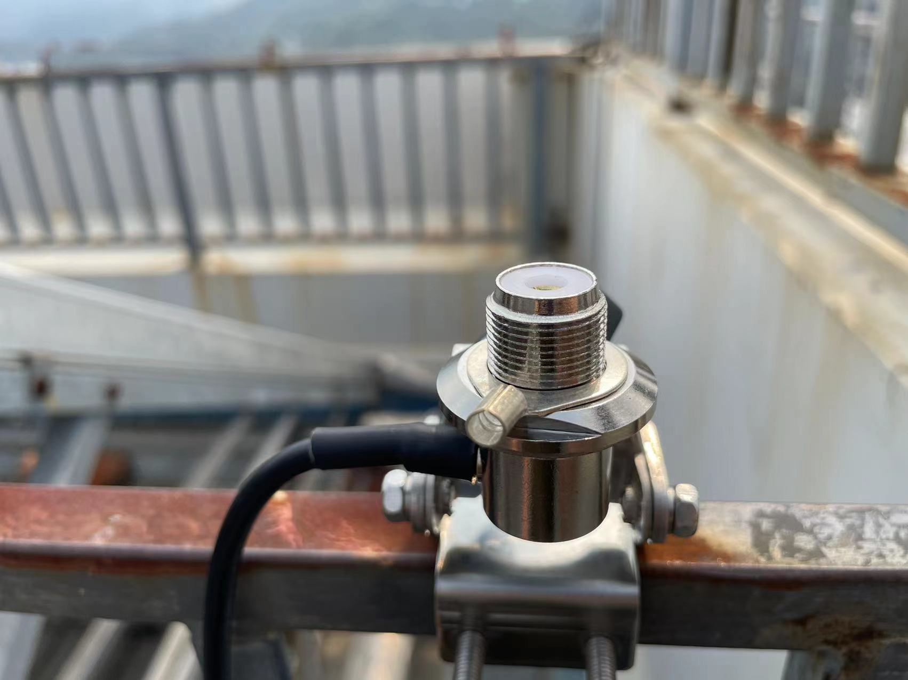
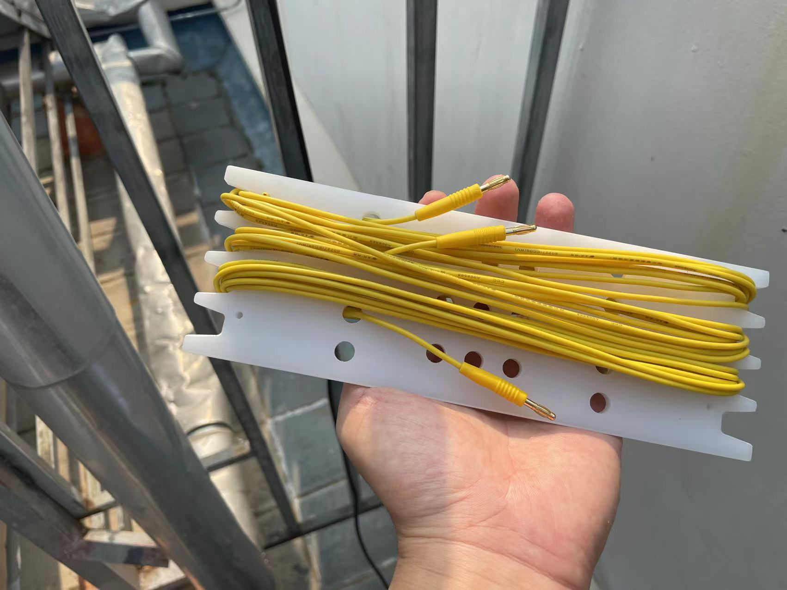
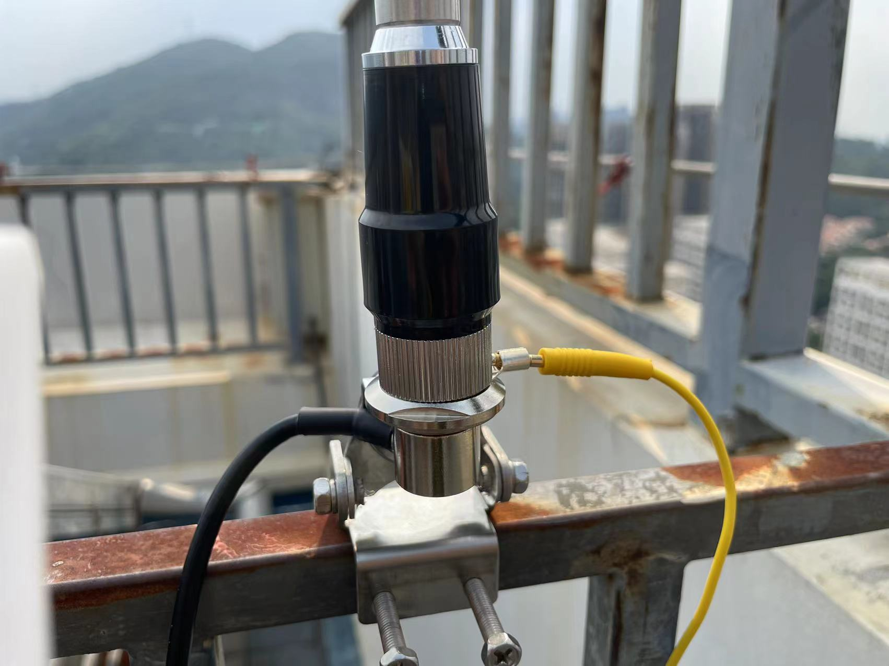
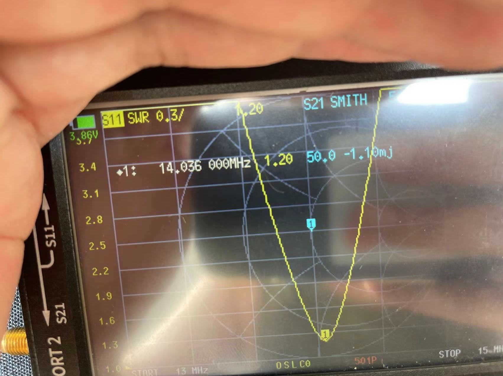

Set my M-104 on a roof

Today i'm setting up my M-104 antenna on the roof.
There are many ways to set it up but today i used it as a portable GP, vertical polarized.
I used a clamp and mount the base to a railing.

M-104 does require a good counterpoise, i used the ring terminal comes with M-104 and put it to the base.


I used one of the 'banana wire' radials from MC-750 antenna
Above 14MHz at least 1 radial is required, more than 3 is recommended for 7MHz.

Put the radial to the ring terminal and now it will act as my M-104 antenna counterpoise.

It's now time to tune the resonant frequency. Hooked the antenna up to my JNCRadio VNA 3G and i figured my antenna now is resonance at 13.752MHz. (Just look at the SWR readings and Ignore the SmithChart readings as i made a mistake by choosing S21 instead of S11)

As i'm aiming around 14.2xxMHz, I shortened my antenna a little bit and read 14.036 - getting closer.

Shortened a little bit further and i saw what i expected

Now the antenna is set. Time to start my QSOs!